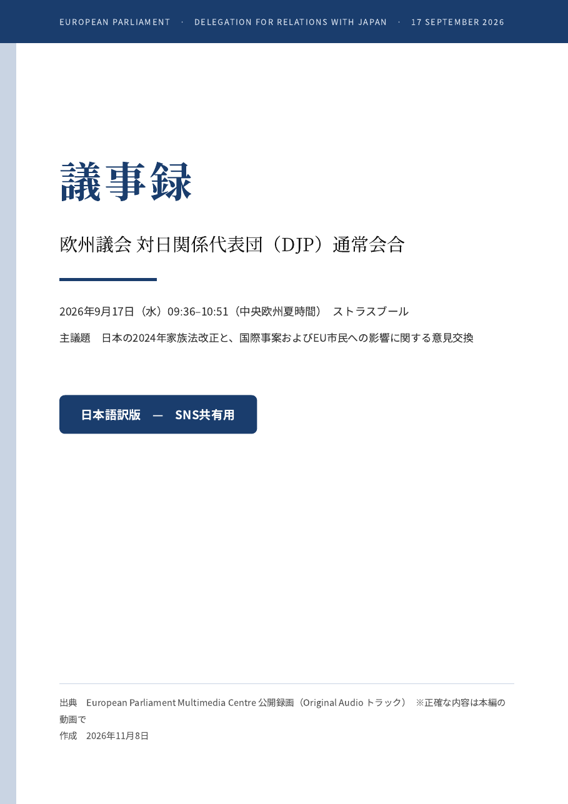

議事録（日本語訳）
欧州議会 対日関係代表団（DJP）通常会合
2026年9月17日（水）09:36–10:51（中央欧州夏時間） ストラスブール

日本の2024年家族法改正と、国際事案およびEU市民への影響について、欧州議会の対日関係代表団が、日本政府（外務省・法務省）、大阪大学の専門家、欧州委員会と意見交換した会合の記録です。欧州議会の公開録画の原語音声から作成し、英語・ポーランド語の発言は逐語訳、日本側が日本語で答えた部分は本人の発言をそのまま記録しています。
日本語訳PDFを開く（20ページ） 本編の動画（欧州議会）| 版 | 内容 |
|---|---|
| 日本語訳（SNS共有用） | 本文のみ。まずはこれ |
| 日本語訳（完全版） | 作成方法・収録範囲・通訳とのずれの一覧を付記 |
| 原語版 | 英語・ポーランド語・日本語、本人の発言そのまま |
| English edition | English speech as spoken; Polish and Japanese translated |
この資料はSNSで共有するために日本語に訳したものです。正確な内容が必要な方は、上の本編の動画をご覧ください。各発言の先頭の時刻は録画の再生位置です。